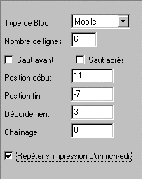
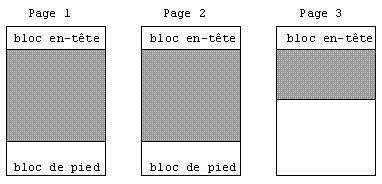

Xwin permet d'insérer un texte riche dans un masque d'impression. Un tel texte peut avoir été saisi dans un masque d'écran Xwin ou par un éditeur Windows tel que WordPad. La manipulation des textes (stockage, lecture, ...) est décrite au chapitre "Stockage des textes riches et programmation" du livre consacré à Ywpf.
Principe de l'impression d'un objet Rich-Edit
Ce type d'objet est utilisé pour gérer du texte libre (commentaires, par exemple). La taille du texte est donc inconnue au moment de la saisie du masque.
Pour que le texte entier puisse être imprimé (et pas seulement la partie délimitée par la boîte de l'objet), les Rich-Edit ont une option de fonctionnement particulière autorisant l'objet à s'agrandir et/ou à se répéter. Pour activer cette option, il faut cocher la case "Répéter si impression d'un Rich-Edit" au niveau des paramètres du bloc.
Remarques :
La case ne peut pas être cochée pour un "bloc de fond".
Cette option est interdite si le bloc contient aussi un objet Tableau.
Si la case est cochée, le bloc ne doit contenir qu'un seul objet Rich-Edit.
Si la case n'est pas cochée, l'objet Rich-Edit se comporte comme un objet ordinaire, à savoir que le texte imprimé est limité à la taille de la boîte (il est donc éventuellement tronqué).
Répétition des objets Rich-Edit
Le mécanisme de la répétition des blocs contenant un objet Rich-Edit est différent si le bloc est mobile ou fixe :
Bloc de type "Fixe".
Le texte est imprimé à l'intérieur de la boîte, telle que vous l'avez dessinée dans Xwin. Pour que le texte soit imprimé en totalité, le bloc est simplement répété autant de fois que nécessaire. Un saut de page a lieu entre chaque répétition.
Bloc de type "Mobile" ou "Tableau".
La boîte de l'objet Rich-Edit est automatiquement agrandie en hauteur jusqu'à la ligne correspondant à la valeur "Position fin" des paramètres du bloc. De plus, si le texte ne tient pas sur la page, il y a débordement et le bloc est répété sur la page suivante.
Comme la boîte s'agrandit, il ne doit pas y avoir d'objets dans le bloc après l'objet Rich-Edit.
Exemple : Soit les paramètres du bloc mobile suivants :

Supposons que la boîte d'un objet Rich-Edit occupe les 6 lignes du bloc. Ces 6 lignes représentent la taille minimum de l'objet mais en fonction de la taille réelle du texte à imprimer, l'objet pourra s'agrandir jusqu'à la position -7.
Cas 1 : Le texte occupe 3 lignes ; son édition se fera sur 6 lignes, les trois dernières lignes restant blanches.
Cas 2 : Le texte occupe 10 lignes ; son édition se fera sur 10 lignes, sans débordement de la page.
Cas 3 : Le texte occupe deux fois et demi la place disponible dans la page pour les blocs mobiles ; son édition se fera sur trois pages, de la manière suivante (le grisé indique la place prise par l'objet Rich-Edit) :

Le bloc de pied des pages 1 et 2 et le bloc d'en-tête des pages 2 et 3 sont comme d'habitude imprimés automatiquement par le mécanisme de débordement.
Traitements, débordement et chaînage
Lors de la répétition automatique d'un bloc contenant un objet Rich-Edit, les points de traitement, les débordements et les chaînages fonctionnent de manière à rendre transparente cette répétition :
Le point de traitement avant est exécuté à chaque répétition, de même que le saut de page avant.
Le point de traitement "avant gestion" est exécuté une seule fois, lors de l'appel à ymig pour imprimer le bloc.
Si un bloc de débordement est prévu, il est imprimé à l'occasion de chaque répétition.
Si un bloc de chaînage est prévu, il n'est imprimé qu'après la dernière répétition.